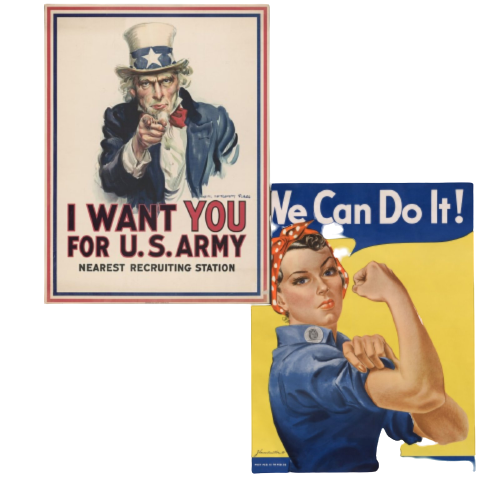
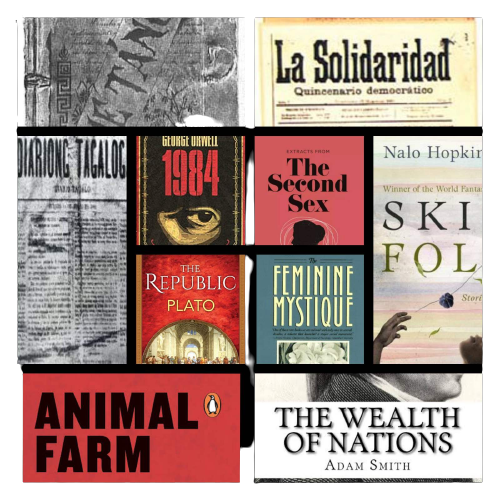
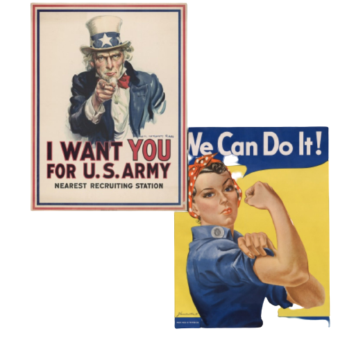
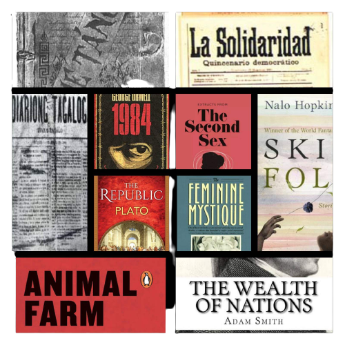

Effectiveness
How effective are
propagandas in general?
How effective is propaganda
written in a literature form?
Propaganda has a target, purpose and has some valid sources . It’s effective in a way you deliver a kind of propaganda to the target audience. The propagandist uses symbols, attitudes and morals that are embedded in the target audience. This is desirable because the emotional response can be deep, powerful, long-lasting and not rational. Propagandas during wars are effective in demoralizing the enemy's morale and give nationalistic and morale values during war many famous propaganda posters like the "I WANT YOU FOR THE U.S ARMY" .
It shows Uncle Sam giving the infamous point to the viewers, this poster has apparently printed over 4 million times and have helped recruit young men into the war as a way to contribute the war effort.
The "WE CAN DO IT" poster shows a woman famously showing her bicep encouraging women to work at wartime jobs and has become one of the famous propaganda posters that symbolizes women empowerment and women patriotism. These posters have paved the way for people who sees these propagandas do a specific job that the propagandas have intended to.
Literature can be considered as the written works of many different subjects and phenomenons with phenomenons can be both fictional and non-fictional, many consider literature as an effective way to drive ideas, solutions, learnings, problems, and many more to society itself as literature can change many aspects of many different systems and beliefs in the local and international community as said many consider it as an effective way to bring ideas in the understanding of the humans, organizations, and other system, we’ve seen many literature works changed and influence the understanding, the system, the society as it is, many even encourage and make aware with the art of literature, novels and writings for La Solidaridad from Jose Rizal sparked and awakened the Filipinos from the oppressive rule of the Spaniards, and even propagandists and journalists at the time were also contributing to the awakening of Filipinos during the Spaniards' reign, like Marcello Del Pilar who is a known Journalist who wrote many journals along the way and his dedication it gave him the name of the "Father of Filipino Journals" and wrote a newspaper organization named "Diaryong Tagalog" and not just journals, newspapers, and books can contribute to the awakening of the Filipinos. Speeches and poems have contributed to the steadfast progress in evoking the Filipinos against their colonists' many poems from Jose Rizal and Andres Bonifacio helped and contribute too, and especially speeches have well awakened the Filipino people both from the colonial rule and post-colonial rule with speeches from many Filipino political leaders and political figures from presidents who have ruled over the Philippines. Not just in the Philippines, we can see the effect of literature to present a message or idea, we see this in many places in the world with pieces of literature that changed the perspective and ideals of the society with those literature books such as 1984, Animal Farm, The Republic, The Wealth of The Nation, and even influential book about gender equality is occurring in literature as well like the Second Sex or the Feminine Mystique. There are also a handful of books with the same playful experimentation with not-so-typical genres for topics that are considered controversial to talk about or more or so serious such as Skin Folk which is a set of short fairy tale stories talking about acceptance of one self and embracing your sexuality and your skin color, or Animal Farm a fable that warns the dangers of giving power to people, and the tyrannical dangers of rising false and totalitarian leaders, and it did impact as it gives a new perspective on things and many more of these books that have left a massive impact in society as it is with many people changed their perspectives and even caused an entire new perspective of governments. Though it is not very effective in a short amount of time. It is because most propagandas in literary form often take lots of time to take effect. And when it does take effect, usually it'll be famous in a certain region or a country. If that happens the effect will likely be small for society. But if the author thoroughly studied before writing then the effect will take a massive hit on society

 

Next


Next